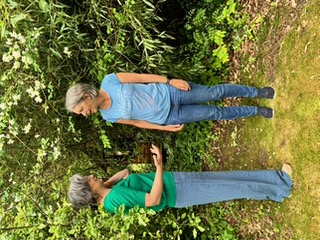
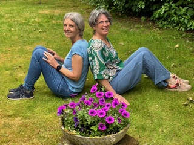
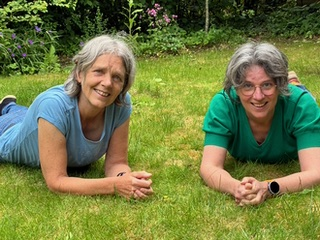
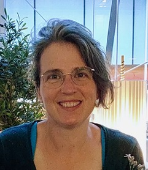
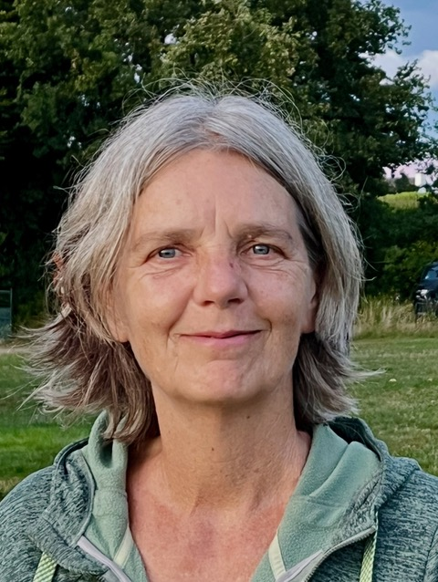
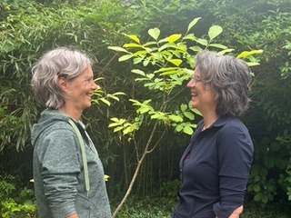

Impressie



Stembevrijding & Psychosomatiek
Anneke en Margreet begeleiden jaargroepen waarin lichaamswerk, stembevrijding en gespreksvoering samenkomen. Een weg naar meer vrijheid, verbinding en bewustzijn.
Daarnaast begeleiden ze familieopstellingen.

Wie zijn wij

Stembevrijder
Ik ben Anneke. In 2016 ben ik afgestudeerd als stembevrijder bij Jan Kortie. Ik hou ervan om te zingen en te bewegen. Dit geeft mij een gevoel van vrijheid, geluk en verbondenheid.
Door stembevrijding ben ik mijzelf beter gaan leren kennen, heb ik mijzelf meer leren omarmen en kan ik mijn emoties makkelijker voelen en delen. Ik word er steeds vrijer en blijer van, meer weg.
Ik ging de opleiding doen voor mijn eigen ontwikkeling, ik had destijds nooit het gevoel te willen gaan werken met groepen. Tijdens een familieweekend is het toch begonnen. Ik stond met Margreet op een zondagochtend in een mistig weiland en begeleidde haar en mezelf in het voelen en het zingen van klanken. Dit was zo'n mooi moment. Het voelde zo één, zo verbonden. Daar is het zaadje geplant.
Langzaam ontstond er een groep. Eerst van alleen bekende mensen, later ook met mensen die mij niet direct kenden. En elke keer is de verbinding weer gauw gelegd. Dat vind ik het mooie van stembevrijding. Maskers vallen af, verbindingen kunnen ontstaan.

Psychosomatisch fysiotherapeut
Ik ben Margreet. In 2016 ben ik afgestudeerd als psychosomatisch fysiotherapeut. Het is ongelofelijk dat de psyche en het lichaam echt één zijn. Onbewuste processen in de psyche spelen door in ons lichaam en in ons gedrag. Door het gevoel en het gedrag op te merken kunnen we inzicht krijgen in onze onbewuste processen.
Ik ben ervaringsdeskundige. Mijn burn-out bracht aan het licht dat ik niet mezelf maar de ander op de eerste plaats zette. Ik deed wat ik dacht te moeten doen voor de ander en cijferde mezelf weg.
In mijn werk als psychosomatisch fysiotherapeut vind ik het zo mooi als er meer bewustzijn komt op de kern, het wezen. Wie ben ik echt en welke overtuigingen houden me daar vandaan. Deze overtuigingen ontstaan in de kindertijd. Ik werk graag met het innerlijke kind.
Hoe het begon
Anneke In 2015, tijdens mijn opleiding tot stembevrijder, ben ik begonnen met het geven van jaargroepen stembevrijding. Ik heb dit (en doe dit nog steeds) met veel plezier en toewijding gedaan en ik voelde ook dat ik graag samen een groep wilde begeleiden in plaats van alleen. Bij collega stembevrijders had ik hierover soms een balletje opgegooid en er ontstond niks.
En toen kwam Margreet met haar droom.
Het samen met Margreet begeleiden van groepen geeft veel extra verdieping en verbinding voor de groep en zeker ook voor mezelf. Het samen voorbereiden en ook het evalueren achteraf, de herkenning, de lol, het delen. Dit alles geeft mij veel positieve energie.
Margreet De samenwerking van Anneke en mij kwam op een mooie manier tot stand. Anneke gaf stembevrijding, dat sprak me zeer aan en vanaf het begin heb ik aan haar workshops en jaargroepen meegedaan. Het heeft me veel gebracht, het uiten op die manier van wat er in mij leeft was helend en fijn.
Op een gegeven moment had ik een droom waarin Anneke en ik samen werkten. Ik belde Anneke en zij was direct heel enthousiast om haar stembevrijding te combineren met mijn psychosomatiek.
We hebben de afgelopen jaren samen jaargroepen gegeven. Iedere keer worden we er zelf weer blij van. Het gaat gemakkelijk, we hebben plezier, het stroomt.
Impressie


Werkvorm
In familieopstellingen kunnen verschuivingen gemaakt worden waardoor de liefde weer kan gaan stromen. Bijvoorbeeld weer kind kunnen zijn, of je ouders nemen zoals ze zijn met hun beperkingen.
Mijn vader is jong overleden aan M.S., een spierziekte. Ik was 9 toen hij overleed. Hij was afwezig, woonde in een verpleeghuis, zat in een rolstoel. In een opstelling stonden mijn ouders na een aantal processen naast elkaar. Dit beeld is nog steeds helend voor mij.
Dat verschillende opstellingen mij zo veel gebracht hebben heeft mij gemotiveerd er zelf ook mee aan het werk te gaan. Alles wat mij helpt komt ook in de psf terug.
Het leren begeleiden van opstellingen is een geleidelijke weg. Individueel ben ik tijdens de burn-out periode door Hans van Ameide behandeld met individuele opstellingen. Bij hem en Erna Jans heb ik een weekend introductie familie opstellingen gedaan.
Bij Els Thissen kwam de verwondering nog meer. Zij werkt vanuit de cursus in wonderen en laat de liefde weer stromen waar ruimte is. Met veel humor in het gesprek en met veel wijsheid en liefde in de opstellingen.
Bij Elmer Hendrix vond ik een vakman, zijn manier van werken voelt bijna zakelijk. Haarscherp naar de kern. Zijn boeken Zinnen die de ziel raken en TAO en de kunst van familieopstellingen geven veel helderheid.
Door dit alles samen heb ik mijn eigen stijl ontwikkeld. In een groep heb ik één keer samen met Anneke de familieopstellingen gegeven. Dit was intens en mooi. Anneke en ik hebben veel opstellingen met elkaar gedaan.
Al tientallen jaren ben ik geïnteresseerd in familieopstellingen. Ik heb het echter altijd tè spannend gevonden om me aan te melden, ook al zou dat in de rol van representant zijn.
Tot Els Thissen via een cursus in wonderen op mijn pad kwam. Bij haar durfde ik me aan te melden en is er een nieuwe wereld voor me open gegaan. Zo mooi om te ervaren wat er gezien en gevoeld wil worden. En dat de onderstroom altijd Liefde is. Dat is voor mij zo helend.
De opstellingen die ik als deelnemer heb ondergaan zullen me nog lang bij blijven; het me zo welkom voelen is een hele fijne herinnering/ervaring die ik uit één ervan heb meegenomen. Ook het me gedragen voelen door de moederlijn heeft een diepe en warme indruk op me gemaakt. Hier ben ik heel dankbaar voor.

Aankomend programma
Jaargroep 2026 – 2027
Met de Latifa (gebed uit het Soefisme) als leidraad gaan we samen onderweg. De thema's zijn: aanvaarden, verlangen, hopen, vertrouwen, loslaten, liefde en bereidheid. We werken met lichaamswerk, stembevrijding en gespreksvoering.
Wanneer
Elke tweede woensdag, sept t/m april — 7 bijeenkomsten
Tijd
10:00 – 12:00 uur
Inloop vanaf 9:45 met koffie/thee
Locatie
IJsclub in Lonneker
Spölminkkamp 45
Kosten
€ 240,–
Data
Familieopstellingen
Een dagdeel waarin we met familieopstellingen aan de slag gaan, begeleid door Margreet en Anneke.
Wanneer
Vrijdag 9 oktober
Tijd
9:30 – 12:00 uur
Inloop vanaf 9:15 met koffie
Locatie
Zwanenhof in Zenderen
Zaal Angeluszaal
Kosten
€ 35,– per persoon
Groepsgrootte: 12 deelnemers
Ervaringen
"Deelnemen aan de jaargroep vind ik erg fijn en bijzonder. Elke bijeenkomst staat in het teken van één thema, waarvoor Margreet en Anneke verschillende oefeningen voorbereiden. Anneke gebruikt haar ervaringen met stembevrijding en Margreet vanuit haar expertise als psychosomatisch therapeut. Deze variëteit is heel prettig en Anneke en Margreet vullen elkaar daarbij goed aan. De jaargroep helpt me mezelf steeds een beetje beter leren kennen en daar tevreden mee te mogen zijn."
"Het doet me al jaren goed om mijn valkuilen te er- en herkennen. De vertrouwde veilige sfeer die jullie creëren waardoor wij ons zo prettig voelen is zó goed. De balans tussen zingen en oefeningen doen is prima."
"Tijdens de stembevrijding is er ruimte om te voelen, om het hoekje te kijken naar daar waar je liever wegblijft, en dan de ruimte krijgen om dat te delen. Anneke en Margreet weten de veiligheid te creëren waarin dat kan en mag."
"Klank geven aan wat er in mij leeft, ongemak, vreugde, pijn, verdriet, benauwdheid. Daar uiting aan geven. Zichtbaar worden, in contact komen met je innerlijke werkelijkheid, zo helend. Bewust aandacht geven aan mijn lichaam, voelen wat mijn lichaam mij te vertellen heeft."
"De familieopstellingen die geleid werden door Margreet waren integer, liefdevol en met respect voor het systeem van de deelnemer. Hierdoor ontstond er ruimte voor inzichten en heling."
"Het is wel spannend om in een groep van nog onbekende vrouwen direct je grootste familie-issues neer te zetten, maar wat is dat verhelderend, mooi en helend! Hoe iedereen direct in de rol komt, en hier ook weer uit stapt is bijzonder. Dankjewel Margreet en Anneke, jullie hebben het bijzonder mooi begeleid."
Contact
Neem gerust contact op via e-mail. We horen graag van je!
Jaargroep
margreetenannekedoenhetsamen@gmail.comFamilieopstellingen
elfrinkfamilieopstellingen@gmail.com